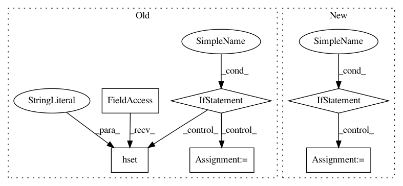

5806e726f49885975d60bee9265371002b3ae24c,python/ray/experimental/internal_kv.py,,_internal_kv_put,#Any#Any#Any#,27
Before Change
worker = ray.worker.global_worker
if overwrite:
updated = worker.redis_client.hset(key, "value", value)
else:
updated = worker.redis_client.hsetnx(key, "value", value)
return updated == 0 // already exists
@client_mode_hook
After Change
already_exists (bool): whether the value already exists.
if redis:
if overwrite:
updated = ray.worker.global_worker.redis_client.hset(
key, "value", value)
else:
updated = ray.worker.global_worker.redis_client.hsetnx(
key, "value", value)
return updated == 0 // already exists
else:
return not ray.worker.global_worker.gcs_client.kv_put(
key, value, overwrite)
In pattern: SUPERPATTERN
Frequency: 3
Non-data size: 6
Instances
Project Name: ray-project/ray
Commit Name: 5806e726f49885975d60bee9265371002b3ae24c
Time: 2021-04-05
Author: 74173148+iycheng@users.noreply.github.com
File Name: python/ray/experimental/internal_kv.py
Class Name:
Method Name: _internal_kv_put
Project Name: stratosphereips/StratosphereLinuxIPS
Commit Name: cd47df4b83023a3124ce72757a5e1df63585a2fa
Time: 2020-06-02
Author: eldraco@gmail.com
File Name: slips/core/database.py
Class Name: Database
Method Name: setInfoForIPs
Project Name: stratosphereips/StratosphereLinuxIPS
Commit Name: e621bae538b1f58a5a7a93ea8bf72bec21c6a726
Time: 2020-06-09
Author: eldraco@gmail.com
File Name: slips/core/database.py
Class Name: Database
Method Name: setInfoForIPs